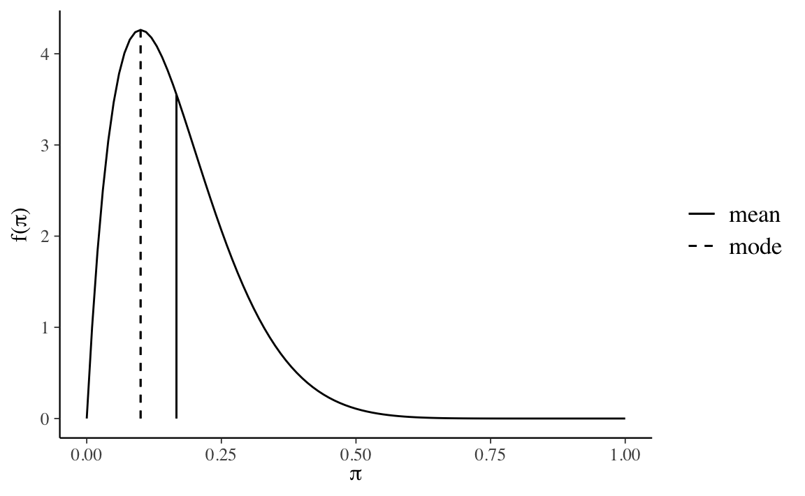

Capitolo 14 Flusso di lavoro bayesiano
La moderna statistica bayesiana viene per lo più eseguita utilizzando un linguaggio di programmazione probabilistico implementato su computer. Ciò ha cambiato radicalmente il modo in cui venivano eseguite le statistiche bayesiane anche fin pochi decenni fa. La complessità dei modelli che possiamo costruire è aumentata e la barriera delle competenze matematiche e computazionali che sono richieste è diminuita. Inoltre, il processo di modellazione iterativa è diventato, sotto molti aspetti, molto più facile da eseguire. Anche se formulare modelli statistici complessi è diventato più facile che mai, la statistica è un campo pieno di sottigliezze che non scompaiono magicamente utilizzando potenti metodi computazionali. Pertanto, avere una buona preparazione sugli aspetti teorici, specialmente quelli rilevanti per la pratica, è estremamente utile per applicare efficacemente i metodi statistici.
14.1 Modellizzazione bayesiana
Nell’approccio bayesiano all’inferenza statistica si prende in considerazione una variabile casuale \(Y\) di cui si conosce la distribuzione a meno di un parametro \(\theta\). Secondo l’approccio bayesiano, è possibile modellare l’incertezza sul valore del parametro rappresentandolo con una variabile casuale continua \(\Theta\) avente come supporto l’insieme dei valori ammissibili per il parametro cercato. La funzione di densità \(p(\theta)\) prende il nome di distribuzione a priori e rappresenta la sintesi delle opinioni e delle informazioni che si hanno sul parametro prima dell’osservazione dei dati. L’aggiornamento dell’incertezza su \(\theta\) è determinata dal verificarsi dell’evidenza \(y\), ovvero dall’osservazione dei risultati di un esperimento casuale. Le informazioni provenienti dal campione osservato \(y = (y_1, \dots, y_n)\) sono contenute nella funzione \(p(y \mid \theta)\), che, osservata come funzione di \(\theta\) per \(y\), prende il nome di funzione di verosimiglianza. L’aggiornamento delle conoscenze a priori incorporate nella distribuzione iniziale \(p(\theta)\) in seguito al verificarsi di \(Y = y\) (evidenza empirica) avviene attraverso il teorema di Bayes in cui \(p(\theta \mid y)\) risulta proporzionale al prodotto della probabilità a priori e della verosimiglianza e prende il nome di distribuzione a posteriori:
\[\begin{equation} p(\theta \mid y) = \frac{p(y \mid \theta) p(\theta)}{\int_{\Theta}p(y \mid \theta) p(\theta) \,\operatorname {d}\!\theta} \quad \theta \in \Theta. \tag{14.1} \end{equation}\]
Si noti che l’integrale al denominatore della (14.1) è spesso di difficile risoluzione analitica per cui l’inferenza bayesiana solitamente procede attraverso metodi di ricampionamento e metodi iterativi, quali le Catene di Markov Monte Carlo (MCMC).
Martin, Kumar, and Lao (2022) descrivono la modellazione bayesiana distinguendo tre passaggi.
- Dati alcuni dati e alcune ipotesi su come questi dati potrebbero essere stati generati, si progetta un modello statistico combinando e trasformando variabili casuali.
- Si usa il teorema di Bayes per condizionare il modello ai dati. Questo processo viene chiamato “inferenza” e come risultato si ottiene una distribuzione a posteriori.
- Si critica il modello utilizzando criteri diversi, inclusi i dati e la nostra conoscenza del dominio, per verificare se abbia senso. Poiché in generale siamo incerti sul modello, a volte si confrontano modelli diversi.
Questi tre passaggi vengono eseguiti in modo iterativo e danno luogo a quello che è chiamato “flusso di lavoro bayesiano” (bayesian workflow).
14.1.1 Notazione
Per fissare la notazione, nel seguito \(y\) rappresenterà i dati e \(\theta\) rappresenterà i parametri incogniti di un modello statistico. Sia \(y\) che \(\theta\) vengono concepiti come variabili casuali. Con \(x\) vengono invece denotate le quantità note, come ad esempio i predittori del modello lineare. Per rappresentare in un modo conciso i modelli probabilistici viene usata una notazione particolare. Ad esempio, invece di scrivere \(p(\theta) = \mbox{Beta}(1, 1)\) scriviamo \(\theta \sim \mbox{Beta}(1, 1)\). Il simbolo “\(\sim\)” viene spesso letto “è distribuito come”. Possiamo anche pensare che significhi che \(\theta\) costituisce un campione casuale estratto dalla distribuzione Beta(1, 1). Allo stesso modo, ad esempio, la verosimiglianza del modello binomiale può essere scritta come \(y \sim \text{Bin}(n, \theta)\).
14.2 Distribuzioni a priori
Quando adottiamo un approccio bayesiano, i parametri della distribuzione di riferimento non venono considerati come delle costanti incognite ma bensì vengono trattati come variabili casuali; di conseguenza, i parametri assumono una particolare distribuzione che nelle statistica bayesiana viene definita “a priori”. I parametri \(\theta\) possono assumere delle distribuzioni a priori differenti: a seconda delle informazioni disponibili bisogna selezionare una distribuzione di \(\theta\) in modo tale che venga assegnata una probabilità maggiore a quei valori del parametro che si ritengono più plausibili. Idealmente, le credenze a priori che portano alla specificazione di una distribuzione a priori dovrebbero essere supportate da una qualche motivazione, come ad esempio i risultati di ricerche precedenti.
14.2.1 Tipologie di distribuzioni a priori
Possiamo distinguere tra diverse distribuzioni a priori in base a quanto fortemente impegnano il ricercatore a ritenere come plausibile un particolare intervallo di valori dei parametri. Il caso più estremo è quello che rivela una totale assenza di conoscenze a priori, il che conduce alle distribuzioni a priori non informative, ovvero quelle che assegnano lo stesso livello di fiducia a tutti i valori dei parametri. Le distribuzioni a priori informative, d’altra parte, possono essere debolmente informative o fortemente informative, a seconda del modo in cui lo sperimentatore distribuisce la sua fiducia nello spazio del parametro. Il caso più estremo di credenza a priori è quello che assegna tutta la probabilità ad un singolo valore del parametro. La figura seguente mostra alcuni esempi di distribuzioni a priori per il modello Binomiale:
- distribuzione non informativa: \(\theta_c \sim \mbox{Beta}(1,1)\);
- distribuzione debolmente informativa: \(\theta_c \sim \mbox{Beta}(5,2)\);
- distribuzione fortemente informativa: \(\theta_c \sim \mbox{Beta}(50,20)\);
- valore puntuale: \(\theta_c \sim \mbox{Beta}(\alpha, \beta)\) con \(\alpha, \beta \rightarrow \infty\) e \(\frac{\alpha}{\beta} = \frac{5}{2}\).
FIGURA 14.1: Esempi di distribuzioni a priori per il parametro \(\theta_c\) nel Modello Binomiale.
14.2.2 Selezione della distribuzione a priori
La selezione delle distribuzioni a priori è stata spesso vista come una delle scelte più importanti che un ricercatore fa quando implementa un modello bayesiano in quanto può avere un impatto sostanziale sui risultati finali. La soggettività delle distribuzioni a priori è evidenziata dai critici come un potenziale svantaggio dei metodi bayesiani. A questa critica, Schoot et al. (2021) rispondono dicendo che, al di là della scelta delle distribuzioni a priori, ci sono molti elementi del processo di inferenza statistica che sono soggettivi, ovvero la scelta del modello statistico e le ipotesi sulla distribuzione degli errori. In secondo luogo, Schoot et al. (2021) notano come le distribuzioni a priori svolgono due importanti ruoli statistici: quello della “regolarizzazione della stima”, ovvero, il processo che porta ad indebolire l’influenza indebita di osservazioni estreme, e quello del miglioramento dell’efficienza della stima, ovvero, la facilitazione dei processi di calcolo numerico di stima della distribuzione a posteriori. L’effetto della distribuzione a priori sulla distribuzione a posteriori verrà discusso in dettaglio nel Capitolo ??.
14.2.3 Un’applicazione empirica
Per introdurre la modelizzazione bayesiana useremo qui i dati riportati da Zetsche, Bürkner, and Renneberg (2019) (si veda l’appendice E). Tali dati corrispondono a 23 “successi” in 30 prove e possono dunque essere considerati la manifestazione di una variabile casuale Bernoulliana.
Se non abbiamo alcuna informazione a priori su \(\theta\) (ovvero, la probabilità che l’aspettativa dell’umore futuro del partecipante sia distorta negativamente), potremmo pensare di usare una distribuzione a priori uniforme, ovvero una Beta di parametri \(\alpha=1\) e \(\beta=1\). Una tale scelta, tuttavia, è sconsigliata in quanto è più vantaggioso usare una distribuzione debolmente informativa, come ad esempio \(\mbox{Beta}(2, 2)\), che ha come scopo la regolarizzazione, cioè quello di mantenere le inferenze in un intervallo ragionevole. Qui useremo una \(\mbox{Beta}(2, 10)\).
\[ p(\theta) = \frac{\Gamma(12)}{\Gamma(2)\Gamma(10)}\theta^{2-1} (1-\theta)^{10-1}. \]
bayesrules::plot_beta(alpha = 2, beta = 10, mean = TRUE, mode = TRUE)
La \(\mbox{Beta}(2, 10)\) esprime la credenza che \(\theta\) assume valori \(< 0.5\), con il valore più plausibile pari a circa 0.1. Questo è assolutamente implausibile per il caso dell’esempio in discussione: la \(\mbox{Beta}(2, 10)\) verrà usata solo per scopi didattici, ovvero, per esplorare le conseguenze di tale scelta sulla distribuzione a posteriori.
14.3 La funzione di verosimiglianza
Iniziamo con una definizione.
Definizione 14.1 La funzione di verosimiglianza \(\mathcal{L}(\theta \mid y) = f(y \mid \theta), \theta \in \Theta,\) è la funzione di massa o di densità di probabilità dei dati \(y\) vista come una funzione del parametro sconosciuto (o dei parametri sconosciuti) \(\theta\).
Detto in altre parole, le funzioni di verosimiglianza e di (massa o densità di) probabilità sono formalmente identiche, ma è completamente diversa la loro interpretazione. Nel caso della funzione di massa o di densità di probabilità la distribuzione del vettore casuale delle osservazioni campionarie \(y\) dipende dai valori assunti dal parametro (o dai parametri) \(\theta\); nel caso della la funzione di verosimiglianza la credibilità assegnata a ciascun possibile valore \(\theta\) viene determinata avendo acquisita l’informazione campionaria \(y\) che rappresenta l’elemento condizionante. In altri termini, la funzione di verosimiglianza descrive in termini relativi il sostegno empirico che \(\theta \in \Theta\) riceve da \(y\). Infatti, la funzione di verosimiglianza assume forme diverse al variare di \(y\). Possiamo dunque pensare alla funzione di verosimiglianza come alla risposta alla seguente domanda: avendo osservato i dati \(y\), quanto risultano (relativamente) credibili i diversi valori del parametro \(\theta\)? In termini più formali possiamo dire: sulla base dei dati, \(\theta_1 \in \Theta\) risulta più credibile di \(\theta_2 \in \Theta\) quale indice del modello probabilistico generatore dei dati se \(\mathcal{L}(\theta_1) > \mathcal{L}(\theta_1)\).
Notiamo un punto importante: la funzione \(\mathcal{L}(\theta \mid y)\) non è una funzione di densità. Infatti, essa non racchiude un’area unitaria.
14.3.1 Notazione
Seguendo una pratica comune, in questa dispensa spesso useremo la notazione \(p(\cdot)\) per rappresentare due quantità differenti, ovvero la funzione di verosimiglianza e la distribuzione a priori. Questo piccolo abuso di notazione riflette il seguente punto di vista: anche se la verosimiglianza non è una funzione di densità di probabilità, noi non vogliamo stressare questo aspetto, ma vogliamo piuttosto pensare alla verosimiglianza e alla distribuzione a priori come a due elementi che sono egualmente necessari per calcolare la distribuzione a posteriori. In altri termini, per così dire, questa notazione assegna lo stesso status epistemologico alle due diverse quantità che si trovano al numeratore della regola di Bayes.
14.3.2 La log-verosimiglianza
Dal punto di vista pratico risulta più conveniente utilizzare, al posto della funzione di verosimiglianza, il suo logaritmo naturale, ovvero la funzione di log-verosimiglianza:
\[\begin{equation} \ell(\theta) = \log \mathcal{L}(\theta). \end{equation}\]
Poiché il logaritmo è una funzione strettamente crescente (usualmente si considera il logaritmo naturale), allora \(\mathcal{L}(\theta)\) e \(\ell(\theta)\) assumono il massimo (o i punti di massimo) in corrispondenza degli stessi valori di \(\theta\) (per un approfondimento, si veda l’Appendice ??):
\[ \hat{\theta} = \argmax_{\theta \in \Theta} \ell(\theta) = \argmax_{\theta \in \Theta} \mathcal{L}(\theta). \]
Per le proprietà del logaritmo, si ha
\[\begin{equation} \ell(\theta) = \log \left( \prod_{i = 1}^n f(y \mid \theta) \right) = \sum_{i = 1}^n \log f(y \mid \theta). \end{equation}\]
Si noti che non è necessario lavorare con i logaritmi, ma è fortemente consigliato. Il motivo è che i valori della verosimiglianza, in cui si moltiplicano valori di probabilità molto piccoli, possono diventare estremamente piccoli – qualcosa come \(10^{-34}\). In tali circostanze, non è sorprendente che i programmi dei computer mostrino problemi di arrotondamento numerico. Le trasformazioni logaritmiche risolvono questo problema.
14.3.3 Un’applicazione empirica
Se i dati di Zetsche, Bürkner, and Renneberg (2019) possono essere riassunti da una proporzione allora è sensato adottare un modello probabilistico binomiale quale meccanismo generatore dei dati:
\[\begin{equation} y \sim \mbox{Bin}(n, \theta), \tag{14.2} \end{equation}\]
laddove \(\theta\) è la probabiltà che una prova Bernoulliana assuma il valore 1 e \(n\) corrisponde al numero di prove Bernoulliane. Questo modello assume che le prove Bernoulliane \(y_i\) che costituiscono il campione \(y\) siano tra loro indipendenti e che ciascuna abbia la stessa probabilità \(\theta \in [0, 1]\) di essere un “successo” (valore 1). In altre parole, il modello generatore dei dati avrà una funzione di massa di probabilità
\[ p(y \mid \theta) \ = \ \mbox{Bin}(y \mid n, \theta). \]
Nei capitoli precedenti è stato mostrato come, sulla base del modello binomiale, sia possibile assegnare una probabilità a ciascun possibile valore \(y \in \{0, 1, \dots, n\}\) assumendo noto il valore del parametro \(\theta\). Ma ora abbiamo il problema inverso, ovvero quello di fare inferenza su \(\theta\) alla luce dei dati campionari \(y\). In altre parole, riteniamo di conoscere il modello probabilistico che ha generato i dati, ma di tale modello non conosciamo i parametri: vogliamo dunque ottenere informazioni su \(\theta\) avendo osservato i dati \(y\).
Per i dati di Zetsche, Bürkner, and Renneberg (2019) la funzione di verosimiglianza corrisponde alla funzione binomiale di parametro \(\theta \in [0, 1]\) sconosciuto. Abbiamo osservato un “successo” 23 volte in 30 “prove”, dunque, \(y = 23\) e \(n = 30\). La funzione di verosimiglianza diventa
\[\begin{equation} \mathcal{L}(\theta \mid y) = \frac{(23 + 7)!}{23!7!} \theta^{23} + (1-\theta)^7. \tag{14.3} \end{equation}\]
Per costruire la funzione di verosimiglianza dobbiamo applicare la (14.3) tante volte, cambiando ogni volta il valore \(\theta\) ma tenendo sempre costante il valore dei dati. Per esempio, se poniamo \(\theta = 0.1\)
\[ \mathcal{L}(\theta \mid y) = \frac{(23 + 7)!}{23!7!} 0.1^{23} + (1-0.1)^7 \]
otteniamo
dbinom(23, 30, 0.1)
#> [1] 9.737168e-18Se poniamo \(\theta = 0.2\)
\[ \mathcal{L}(\theta \mid y) = \frac{(23 + 7)!}{23!7!} 0.2^{23} + (1-0.2)^7 \]
otteniamo
dbinom(23, 30, 0.2)
#> [1] 3.581417e-11e così via. La figura 14.2 — costruita utilizzando 100 valori equispaziati \(\theta \in [0, 1]\) — fornisce una rappresentazione grafica della funzione di verosimiglianza.
n <- 30
y <- 23
theta <- seq(0, 1, length.out = 100)
like <- choose(n, y) * theta^y * (1 - theta)^(n - y)
tibble(theta, like) %>%
ggplot(aes(x = theta, y = like)) +
geom_line() +
labs(
y = expression(L(theta)),
x = expression("Valori possibili di" ~ theta)
)FIGURA 14.2: Funzione di verosimiglianza nel caso di 23 successi in 30 prove.
Come possiamo interpretare la curva che abbiamo ottenuto? Per alcuni valori \(\theta\) la funzione di verosimiglianza assume valori piccoli; per altri valori \(\theta\) la funzione di verosimiglianza assume valori più grandi. Questi ultimi sono i valori di \(\theta\) più credibili e il valore 23/30 (la moda della funzione di verosimiglianza) è il valore più credibile di tutti.
14.4 La verosimiglianza marginale
Per il calcolo di \(p(\theta \mid y)\) è necessario dividere il prodotto tra la distribuzione a priori e la verosimiglianza per una costante di normalizzazione. Tale costante di normalizzazione, detta verosimiglianza marginale, ha lo scopo di fare in modo che \(p(\theta \mid y)\) abbia area unitaria.
Si noti che, nel caso di variabili continue, la verosimiglianza marginale è espressa nei termini di un integrale. Tranne in pochi casi particolari, tale integrale non ha una soluzione analitica. Per questa ragione, l’inferenza bayesiana procede calcolando una approssimazione della distribuzione a posteriori mediante metodi numerici.
14.4.1 Un’applicazione empirica
Consideriamo nuovamente i dati di Zetsche, Bürkner, and Renneberg (2019). Supponiamo che nel numeratore bayesiano la verosimiglianza sia moltiplicata per una distribuzione uniforme, ovvero \(\mbox{Beta}(1, 1)\). In tali circostanze, il prodotto si riduce alla funzione di verosimiglianza. Per i dati di Zetsche, Bürkner, and Renneberg (2019), dunque, la costante di normalizzazione si ottiene marginalizzando la funzione di verosimiglianza \(p(y = 23, n = 30 \mid \theta)\) sopra \(\theta\), ovvero risolvendo l’integrale:
\[\begin{equation} p(y = 23, n = 30) = \int_0^1 \binom{30}{23} \theta^{23} (1-\theta)^{7} \,\operatorname {d}\!\theta. \tag{14.4} \end{equation}\]
Una soluzione numerica si trova facilmente usando \(\R\):
like_bin <- function(theta) {
choose(30, 23) * theta^23 * (1 - theta)^7
}
integrate(like_bin, lower = 0, upper = 1)$value
#> [1] 0.03225806La derivazione analitica è fornita nell’Appendice G.
14.5 Distribuzione a posteriori
La distribuzione a postreriori si trova applicando il teorema di Bayes:
\[ \text{probabilità a posteriori} = \frac{\text{probabilità a priori} \cdot \text{verosimiglianza}}{\text{costante di normalizzazione}} \]
Una volta trovata la distribuzione a posteriori, possiamo usarla per derivare altre quantità di interesse. Questo viene generalmente ottenuto calcolando il seguente valore atteso:
\[ J = \int f(\theta) p(\theta \mid y) \,\operatorname {d}\!y \]
Se \(f(\cdot)\) è la funzione identità, ad esempio, \(J\) risulta essere la media di \(\theta\):
\[ \bar{\theta} = \int_{\Theta} \theta p(\theta \mid y) \,\operatorname {d}\!\theta . \]
Ripeto qui quanto detto sopra: le quantità di interesse della statistica bayesiana(costante di normalizzazione, valore atteso della distribuzione a posteriori, ecc.) contengono integrali che risultano, nella maggior parte dei casi, impossibili da risolvere analiticamente. Per questo motivo, si ricorre a metodi di stima numerici, in particolare a quei metodi Monte Carlo basati sulle proprietà delle catene di Markov (MCMC). Questo argomento verrà discusso nel Capitolo ??.
14.6 Distribuzione predittiva a priori
La distribuzione a posteriori è l’oggetto centrale nella statistica bayesiana, ma non è l’unico. Oltre a fare inferenze sui valori dei parametri, potremmo voler fare inferenze sui dati. Questo può essere fatto calcolando la distribuzione predittiva a priori:
\[\begin{equation} p(y^*) = \int_\Theta p(y^* \mid \theta) p(\theta) \,\operatorname {d}\!\theta . \tag{14.5} \end{equation}\]
La (14.5) descrive la distribuzione prevista dei dati in base al modello (che include la distribuzione a priori e la verosimiglianza), ovvero descrive i dati \(y^*\) che ci aspettiamo di osservare, dato il modello, prima di avere osservato i dati del campione.
È possibile utilizzare campioni dalla distribuzione predittiva a priori per valutare e calibrare i modelli utilizzando le nostre conoscenze dominio-specifiche. Ad esempio, ci possiamo chiedere: “È sensato che un modello dell’altezza umana preveda che un essere umano sia alto -1.5 metri?”. Già prima di misurare una singola persona, possiamo renderci conto dell’assurdità di questa domanda. Se la distribuzione prevista dei dati consente domande di questo tipo (ovvero, prevede di osservare dati che risultano insensati alla luce delle nostre conoscenze dominio-specifiche), è chiaro che il modello deve essere riformulato.
14.7 Distribuzione predittiva a posteriori
Un’altra quantità utile da calcolare è la distribuzione predittiva a posteriori:
\[\begin{equation} p(\tilde{y} \mid y) = \int_\Theta p(\tilde{y} \mid \theta) p(\theta \mid y) \,\operatorname {d}\!\theta . \tag{14.6} \end{equation}\]
Questa è la distribuzione dei dati attesi futuri \(\tilde{y}\) alla luce della distribuzione a posteriori \(p(\theta \mid y)\), che a sua volta è una conseguenza del modello adottato (distribuzione a priori e verosimiglianza) e dei dati osservati. In altre parole, questi sono i dati che il modello si aspetta dopo aver osservato i dati de campione. Dalla (14.6) possiamo vedere che le previsioni sui dati attesi futuri sono calcolate integrando (o marginalizzando) sulla distribuzione a posteriori dei parametri. Di conseguenza, le previsioni calcolate in questo modo incorporano l’incertezza relativa alla stima dei parametri del modello.
Commenti e considerazioni finali
Questo Capitolo ha brevemente passato in rassegna i concetti di base dell’inferenza statistica bayesiana. In base all’approccio bayesiano, invece di dire che il parametro di interesse di un modello statistico ha un valore vero ma sconosciuto, diciamo che, prima di eseguire l’esperimento, è possibile assegnare una distribuzione di probabilità, che chiamano stato di credenza, a quello che è il vero valore del parametro. Questa distribuzione a priori può essere nota (per esempio, sappiamo che la distribuzione dei punteggi del QI è normale con media 100 e deviazione standard 15) o può essere del tutto arbitraria. L’inferenza bayesiana procede poi nel modo seguente: si raccolgono alcuni dati e si calcola la probabilità dei possibili valori del parametro alla luce dei dati osservati e delle credenze a priori. Questa nuova distribuzione di probabilità è chiamata “distribuzione a posteriori” e riassume l’incertezza dell’inferenza.